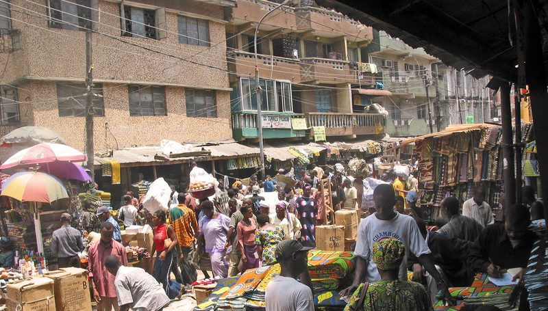
Photography
The Lens of Memory
From studio portraits to street moments, explore the images that tell our story.
A digital museum celebrating Nigeria's creative history — from the cameras that captured our moments, to the sounds, styles and designs that shaped our identity.
Four creative disciplines. One incredible story. Discover the people, movements and moments that shaped Nigeria's creative legacy.

From studio portraits to street moments, explore the images that tell our story.
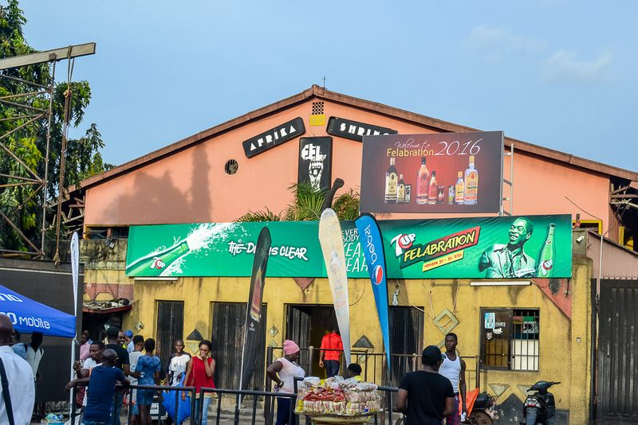
The rhythms, voices and movements that gave Nigeria its sound.
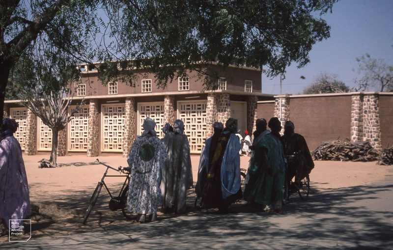
From traditional roots to modern style, discover the looks that moved us.
The objects, spaces and ideas that shaped how we live, work and create.
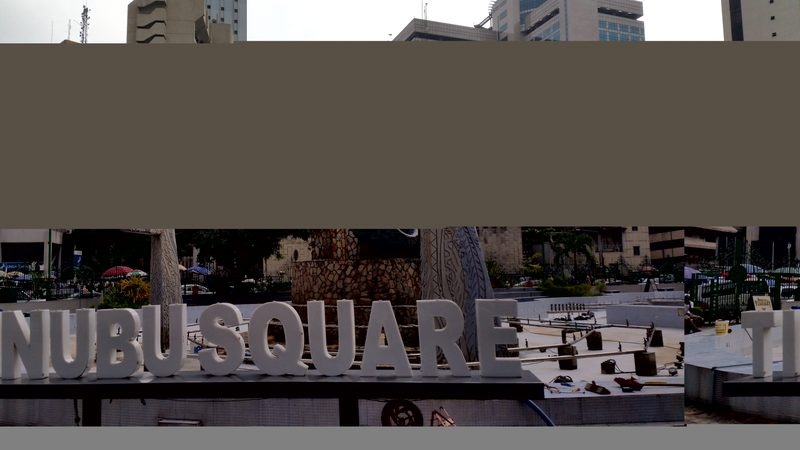
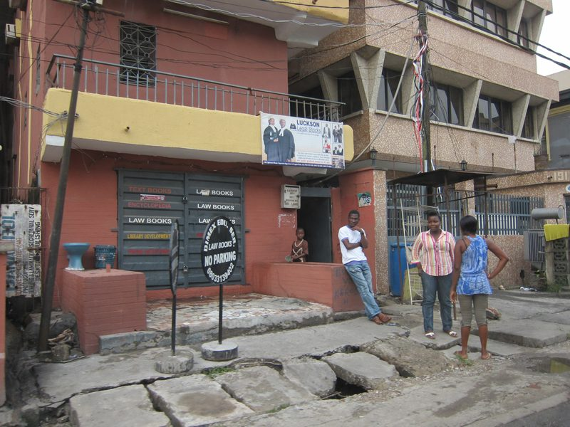

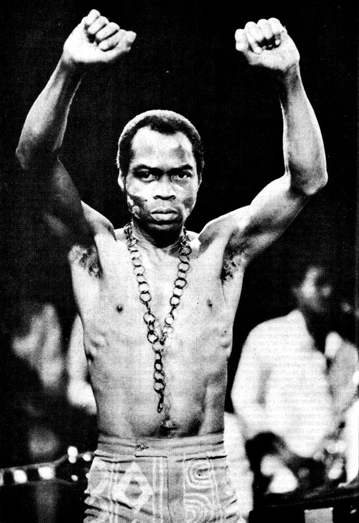
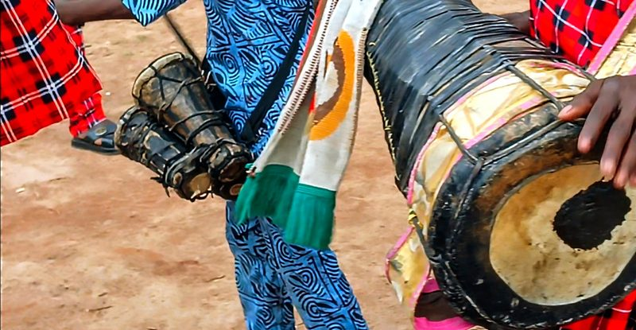
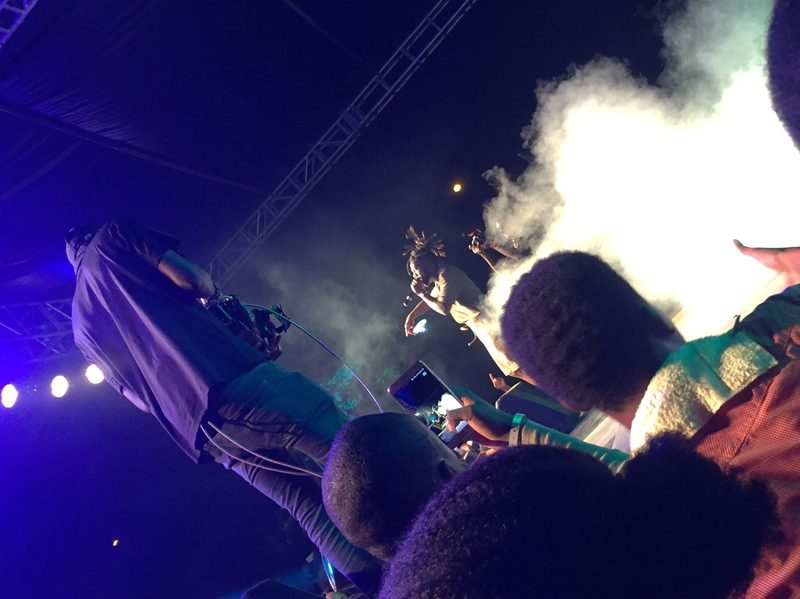
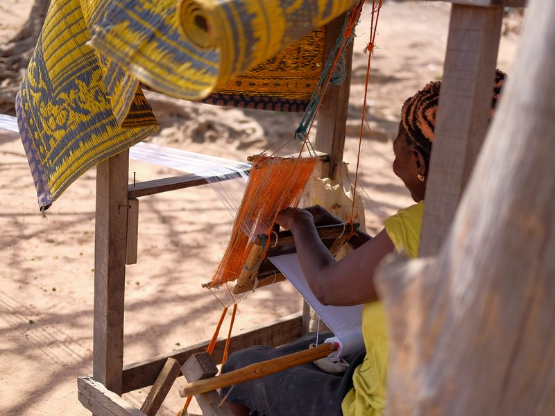
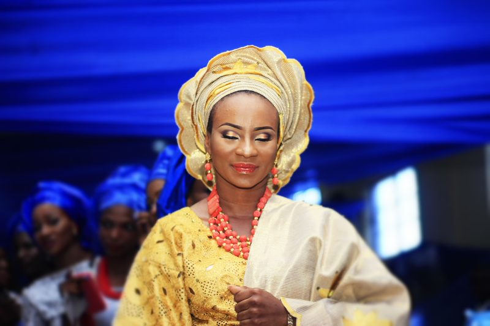
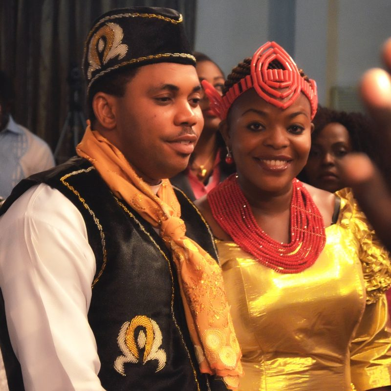
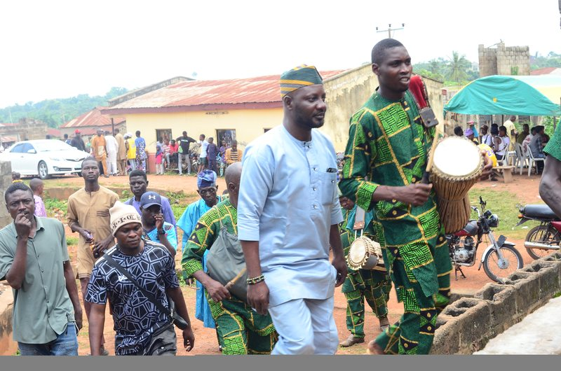
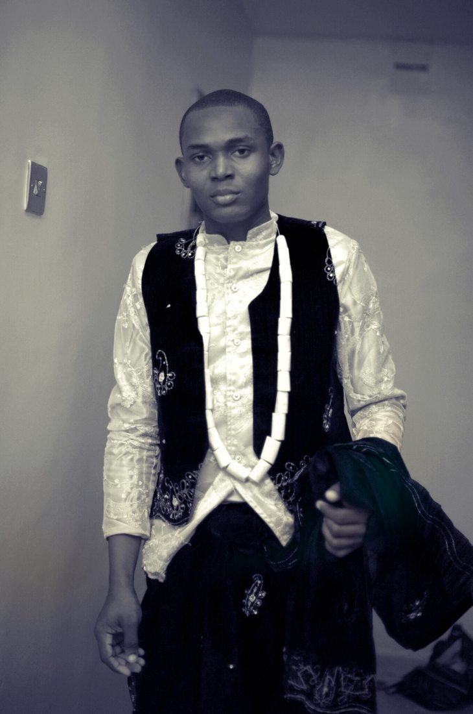
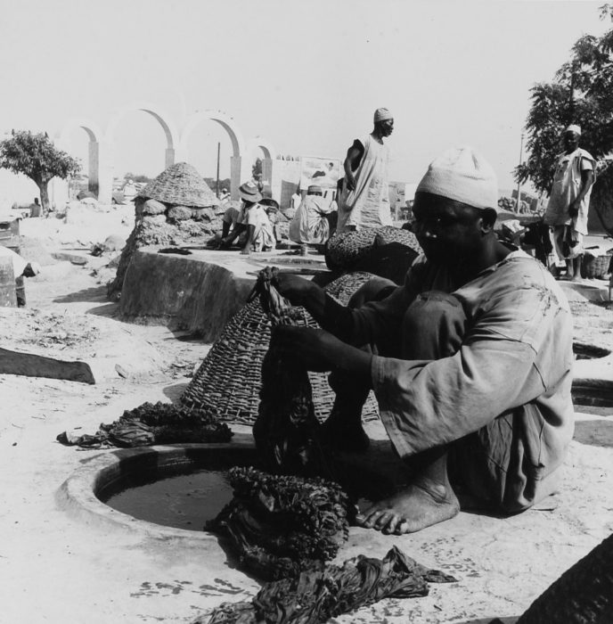
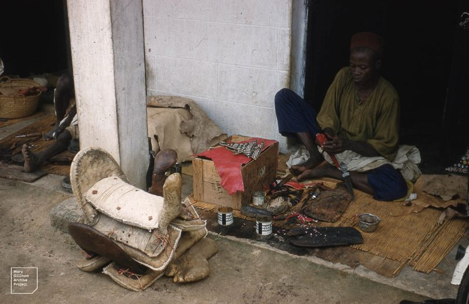
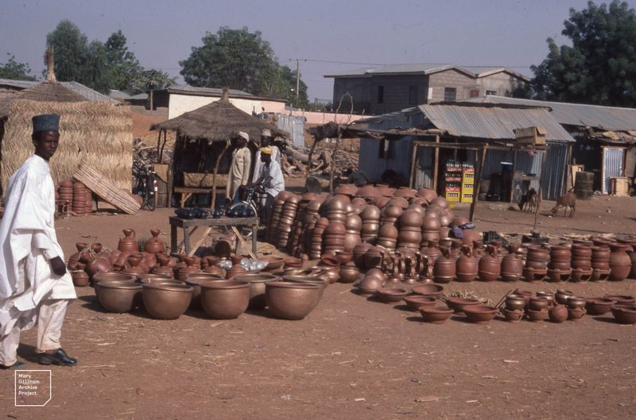
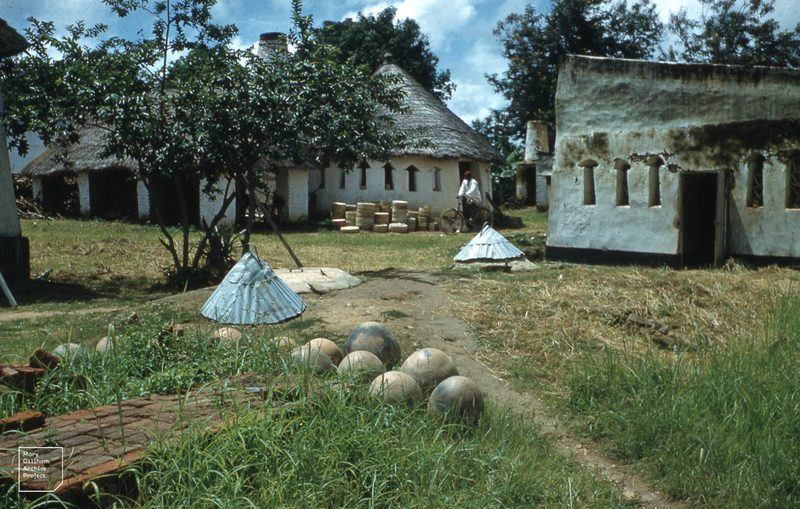

Step into the stories of Nigeria's creative pioneers, visionary artists and cultural movements.
Before high-rises changed the skyline, Lagos wore its soul on its streets. These photographs — from the 1850s to 1970s — capture a city mid-transformation, balancing heritage with ambition.
Read StoryFela Anikulapo-Kuti fused jazz, funk and Yoruba tradition into a form of protest that outlived its creator. By the late 1970s, the Afrika Shrine was more than a venue — it was a political front line.
Read Story
From hand-woven aso-oke and raffia court dress to the bold cuts of Afropunk Lagos — Nigerian fashion has always carried cultural argument inside its seams.
Read StoryFrom the geometric vocabulary of Uli body art to the hand-lettered commerce of 1960s Lagos signage — design has always been how Nigeria explained itself to itself.
Read StoryNo stories found for this collection yet.
From independence to the digital age — key moments and milestones that shaped our creative identity.
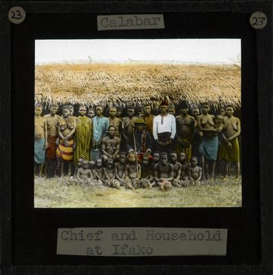
From Igbo Uli art and Yoruba adire dyeing to the early portrait studios documenting pre-colonial and colonial Nigeria, creativity was always present — long before independence.
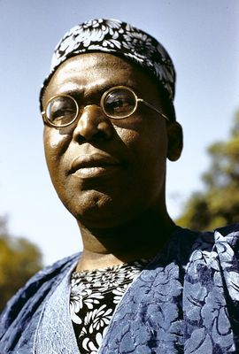
Nigeria gained independence on 1 October 1960. Writers, musicians and artists — Achebe, Soyinka, highlife bandleaders — began defining what it meant to create freely on their own terms.
Fela Kuti's Afrobeat shook stages and government buildings alike. FESTAC '77 brought 15,000 African and diaspora artists to Lagos, announcing Nigeria's cultural ambition to the world.
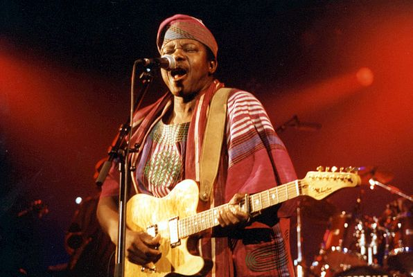
King Sunny Ade carried juju to international stages. Nigerian fashion absorbed global silhouettes while retaining bold local print and fabric. A decade of creative experimentation despite political turbulence.
Nollywood emerged as one of the world's largest film industries. Nigerian music began crossing Atlantic borders, while a resilient creative economy grew despite economic strain and military rule.
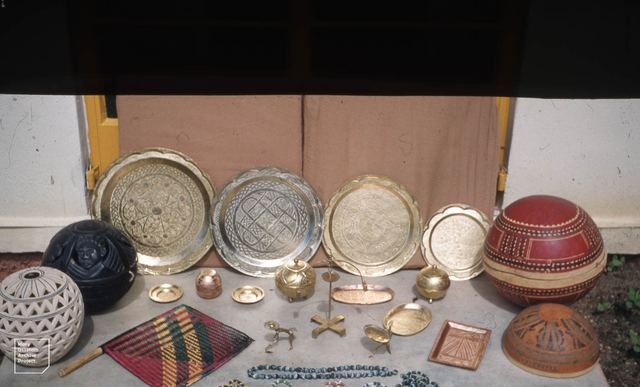
Afrobeats became a global language. Burna Boy, Wizkid and Tems defined a new era. Lagos Art Week and a thriving design scene confirmed Nigeria's place at the centre of African creative culture.
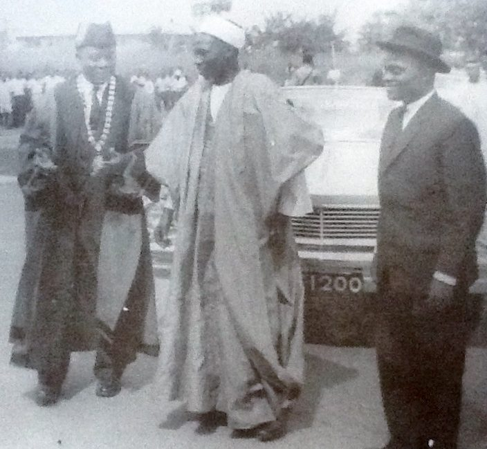
ARCHIVE exists to preserve the stories behind Nigeria's creative identity. We bring photographs, music, fashion, design and cultural memory into one accessible digital space — connecting generations and giving the next generation a deeper understanding of where our creativity comes from.
Explore the Collections"Our history is not a footnote — it's the foundation."